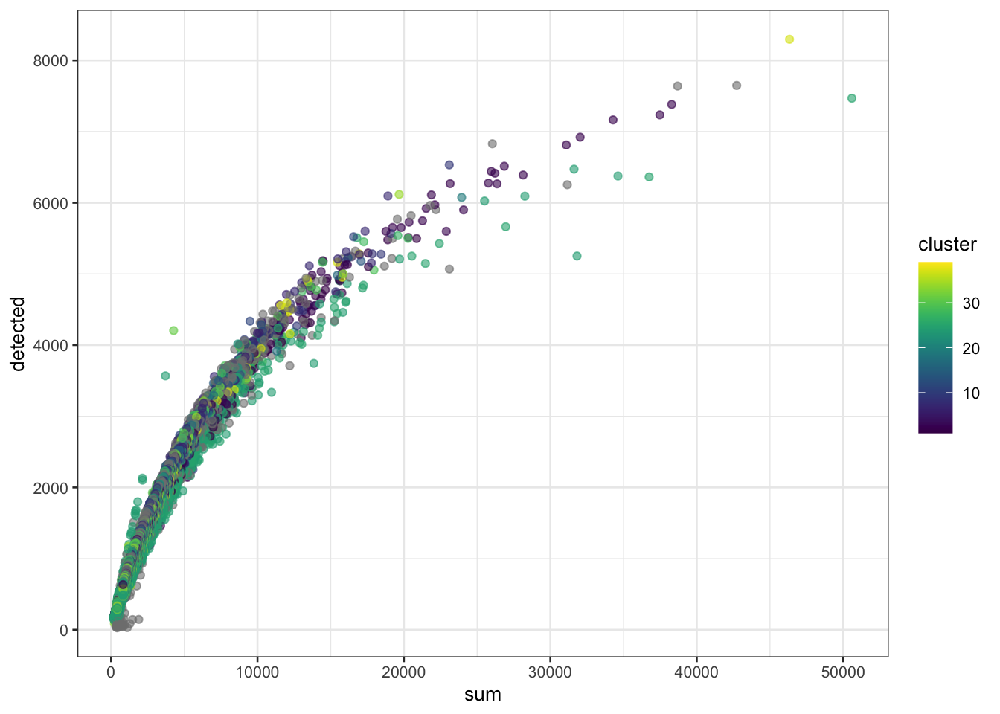
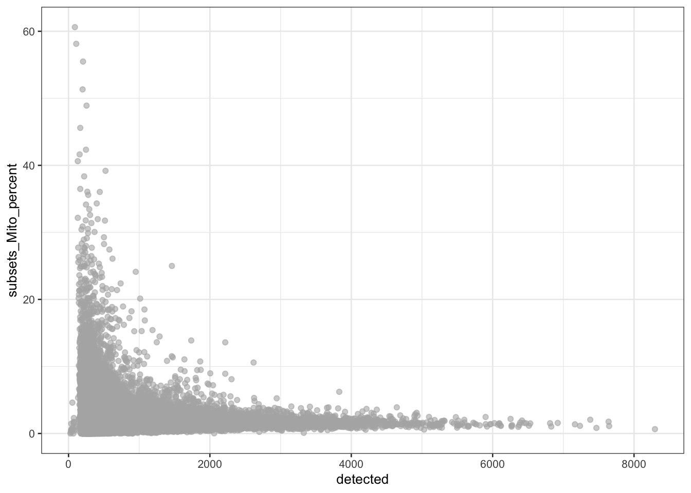
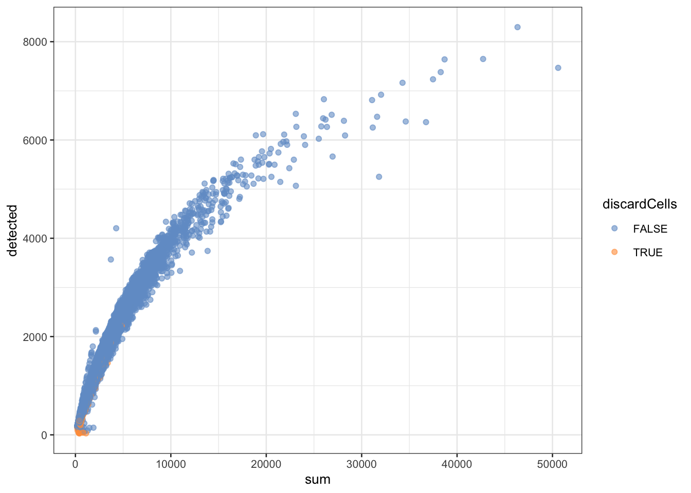
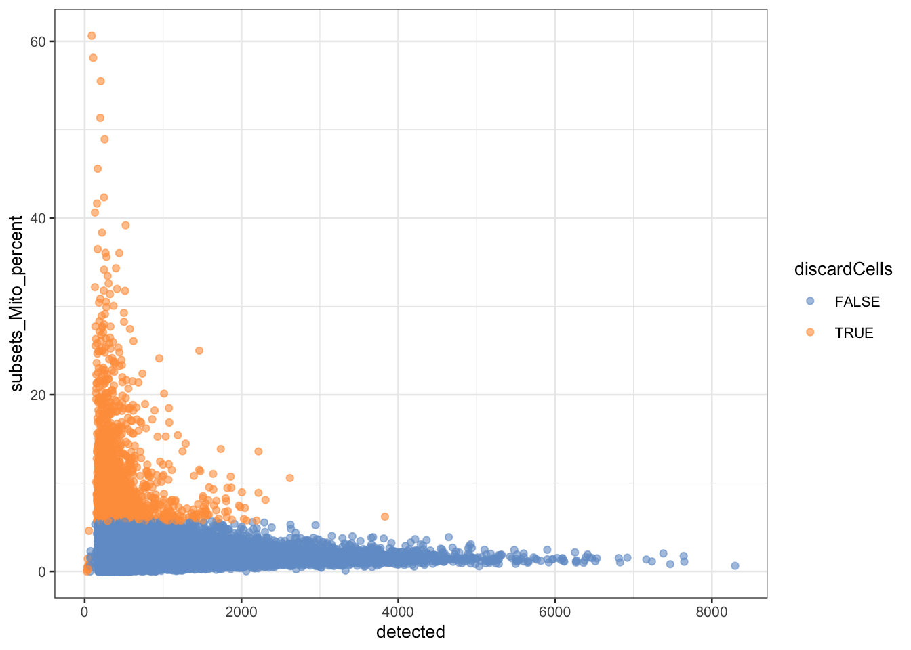
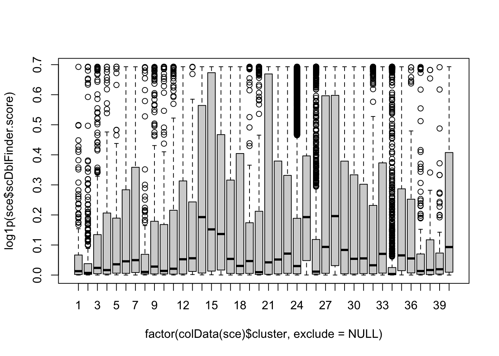
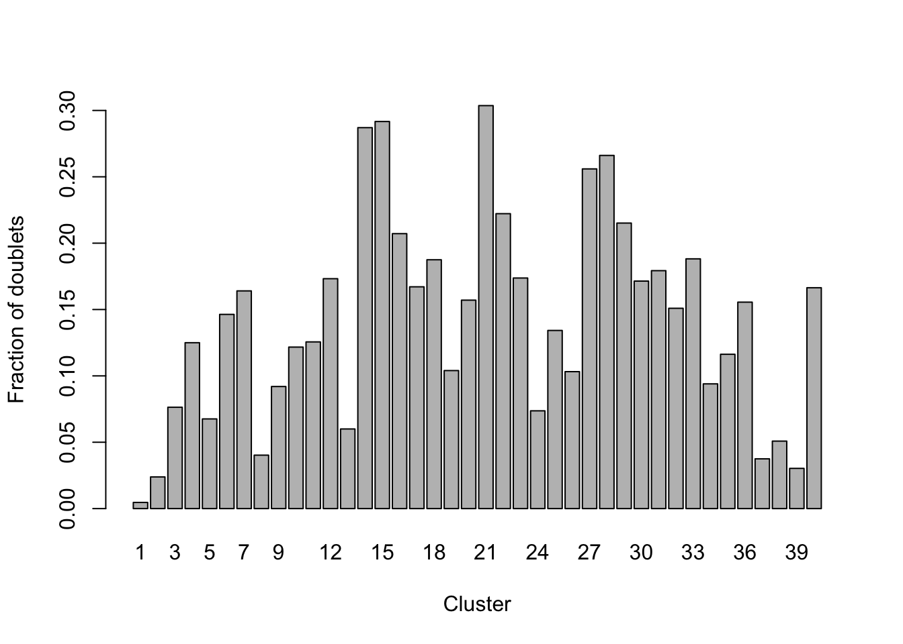
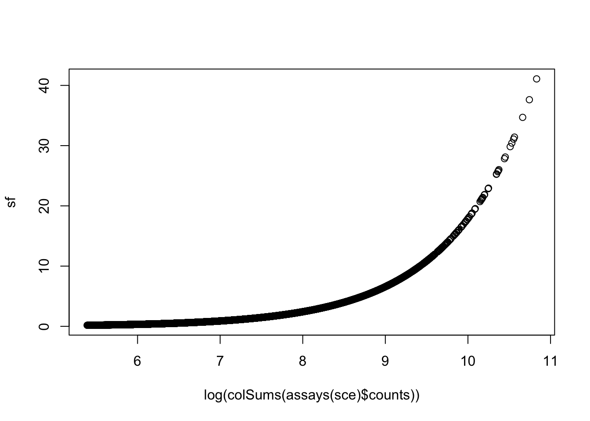

Data import, quality control and normalization for the Macosko dataset
Koen Van den Berge and Jeroen Gilis
20/11/2021
1 Preamble: installation of Bioconductor libraries
# install BiocManager package if not installed yet.
# BiocManager is the package installer for Bioconductor software.
if (!requireNamespace("BiocManager", quietly = TRUE))
install.packages("BiocManager")
# install packages if not yet installed.
pkgs <- c("SingleCellExperiment",
"ExperimentHub",
"edgeR",
"DropletUtils",
"scRNAseq",
"scater",
"scuttle",
"scran",
"BiocSingular",
"scDblFinder")
notInstalled <- pkgs[!pkgs %in% installed.packages()[,1]]
if(length(notInstalled) > 0){
BiocManager::install(notInstalled)
}## 'getOption("repos")' replaces Bioconductor standard repositories, see
## '?repositories' for details
##
## replacement repositories:
## CRAN: https://cran.rstudio.com## Bioconductor version 3.14 (BiocManager 1.30.16), R 4.1.2 (2021-11-01)## Installing package(s) 'SingleCellExperiment', 'ExperimentHub', 'DropletUtils',
## 'scRNAseq', 'scater', 'scuttle', 'scran', 'BiocSingular', 'scDblFinder'## also installing the dependencies 'fs', 'sass', 'httpuv', 'fontawesome', 'sourcetools', 'later', 'promises', 'commonmark', 'bslib', 'htmlwidgets', 'crosstalk', 'jquerylib', 'rjson', 'hms', 'prettyunits', 'shiny', 'DT', 'generics', 'tidyselect', 'assertthat', 'purrr', 'lazyeval', 'GenomicAlignments', 'restfulr', 'Rhtslib', 'progress', 'xml2', 'interactiveDisplayBase', 'dplyr', 'dbplyr', 'filelock', 'sparseMatrixStats', 'rhdf5filters', 'R.oo', 'R.methodsS3', 'sitmo', 'AnnotationFilter', 'rtracklayer', 'Rsamtools', 'ProtGenerics', 'BiocIO', 'biomaRt', 'RcppHNSW', 'beeswarm', 'vipor', 'data.table', 'AnnotationHub', 'BiocFileCache', 'rappdirs', 'DelayedMatrixStats', 'HDF5Array', 'rhdf5', 'R.utils', 'dqrng', 'beachmat', 'Rhdf5lib', 'ensembldb', 'GenomicFeatures', 'gridExtra', 'BiocNeighbors', 'ggbeeswarm', 'viridis', 'ggrepel', 'igraph', 'statmod', 'bluster', 'metapod', 'ScaledMatrix', 'irlba', 'rsvd', 'xgboost'##
## There is a binary version available but the source version is later:
## binary source needs_compilation
## igraph 1.2.8 1.2.9 TRUE
##
##
## The downloaded binary packages are in
## /var/folders/24/8k48jl6d249_n_qfxwsl6xvm0000gn/T//RtmpSAGICt/downloaded_packages## installing the source packages 'igraph', 'scRNAseq'## Old packages: 'crayon', 'digest', 'glue', 'knitr', 'lattice', 'lifecycle',
## 'mgcv', 'mime', 'nlme', 'pillar', 'rlang', 'rmarkdown', 'stringi', 'tibble',
## 'tinytex', 'xfun'2 The Macosko dataset
In this workshop session, we will preprocess the single-cell RNA-seq dataset from the publication by Macosko et al., Cell 161, 1202–1214 from 2015 (link). This is the manuscript in which the droplet scRNA-seq technology Drop-seq was introduced. Six years after the original publication, drop-seq is still one of the most commonly adopted scRNA-seq protocols, as evidenced by the large number of citations for Macosko et al. (4.303 citations at November 3, 2021).
The basic idea behind the Drop-seq protocol can be taken from the graphical abstract of the publication.

The success of Drop-seq can be explained by the following advantageous features:
The use of unique molecular identifiers (UMIs). By working with UMIs, one count corresponds to one observed mRNA molecule present in the cell. Thanks to the use of UMI barcodes, PCR artifacts are reduced.
Scalability: microfluidics technology allows for performing the library prep reactions inside nanodroplets, in which single cells may be contained. Library prep occurs across all droplets simultaneously.
Cost: the experiment costs around 6.5 cents (USD) per cell.
Speed: The very large dataset that we will be working with today was generated in an experiment that took only 4 days.
In this particular experiment, Macosko et al. sequenced 49,300 cells from the mouse retina, identifying 39 transcriptionally distinct cell populations. The experiment was performed in 7 batches.
3 Data availability
3.1 SRA
The Sequence Read Archive (SRA) is the largest publicly available repository of high-throughput sequencing data. The data are stored by the National Center for Biotechnology Information (NCBI) services and multiple cloud storage providers. From this website “raw” sequencing data can be retrieved. In practice, these are usually .sra files, which can be downloaded and converted into FASTQ files using functions from the sratoolkit software.
For our dataset, the FASTQ data can be retrieved from this link. The data are stored as one file per sequencing batch, with each file approximately 20Gb. As such, it will be unfeasible to download and process these FASTQ files in this practical session.
Instead, for demonstrative purposes, we have taken a subsample of the FASTQ file for the first sequencing batch for you to work with. On this subsample, we may perform all the tasks that we would have performed on the full dataset. The steps that are required for downloading and quantifying drop-seq data can be found in a Shell script on our companion GitHub repository.
3.2 GEO
The dataset from Macosko et al. was also uploaded by the authors on the Gene Expression Omnibus (GEO) platform under accession number GSE63472, from which raw and readily-processed data files may be retrieved, including:
GSE63472_RAW.tar, a 90.6Gb object that contains the “raw data” for the experiment. In the scRNA-seq context, FASTQ files are often considered the raw data format.
GSE63472_P14Retina_merged_digital_expression.txt.gz, a 50.7Mb matrix that stores the gene expression values for each cell. These values are integer counts, that did not undergo any type of preprocessing or normalization.
GSE63472_mm10_reference_metadata.tar.gz, a 862.9Mb compressed folder containing information on the reference genome to which the scRNA-seq reads were aligned (see theory slides).
GSE63472_P14Retina_logDGE.txt.gz, a 316.8Mb compressed text file, not clear what it contains (results from a differential gene expression analysis, but with log-transformation, so log-fold changes maybe?).
As such, by downloading GSE63472_P14Retina_merged_digital_expression.txt.gz, we avoid re-quantifying the data, i.e., the translation from reads from the FASTQ files into a gene-level expression values for each cell.
One issue that often arises from data downloaded from GEO, is that there is no strict requirements for which data should be included in the upload by the authors. As such, from my personal experience, it can often be the case that important information like metadata are missing, or the content of the submitted files is unclear. Even if all the required data are available, as is the case here, we would still need to piece all the information together from different files and file formats before we can use them.
3.3 ExperimentHub
The Bioconductor ExperimentHub web resource, which can be accessed using the ExperimentHub R package, provides a central location where curated data from experiments, publications or training courses can be accessed. While it contains far less datasets than the SRA or GEO (4965 records to date), these datasets all follow the tidy data format of Bioconductor. Note that the ExperimentHub contains several types of data, like bulk and single-cell transcriptomics data, microarrays and more.
The Macosko dataset is available from ExperimentHub and can be accessed as follows:
library(ExperimentHub)
edb <- ExperimentHub()
edb[grep("Macosko", edb$title)] # find accession number (can be inefficient)## ExperimentHub with 2 records
## # snapshotDate(): 2021-10-19
## # $dataprovider: Steve McCarroll, GEO
## # $species: Mus musculus
## # $rdataclass: dgCMatrix, DataFrame
## # additional mcols(): taxonomyid, genome, description,
## # coordinate_1_based, maintainer, rdatadateadded, preparerclass, tags,
## # rdatapath, sourceurl, sourcetype
## # retrieve records with, e.g., 'object[["EH2690"]]'
##
## title
## EH2690 | Macosko retina counts
## EH2691 | Macosko retina colData## 5 x 5 sparse Matrix of class "dgCMatrix"
## r1_GGCCGCAGTCCG r1_CTTGTGCGGGAA r1_GCGCAACTGCTC r1_GATTGGGAGGCA
## KITL . . 1 .
## TMTC3 3 . . .
## CEP290 1 3 . 2
## 4930430F08RIK 2 1 2 .
## 1700017N19RIK . . . .
## r1_CCTCCTAGTTGG
## KITL .
## TMTC3 2
## CEP290 1
## 4930430F08RIK 1
## 1700017N19RIK .## DataFrame with 5 rows and 2 columns
## cell.id cluster
## <character> <integer>
## 1 r1_GGCCGCAGTCCG 2
## 2 r1_CTTGTGCGGGAA 2
## 3 r1_GCGCAACTGCTC 2
## 4 r1_GATTGGGAGGCA 2
## 5 r1_CCTCCTAGTTGG NA3.4 scRNASeq
In addition to ExperimentHub, Bioconductor provides the package scRNAseq. This package provides an even more user-friendly client to access (only) scRNA-seq datasets from the ExperimentHub web resource. Data retrieved using the scRNAseq package are stored as user-friendly SingleCellExperiment objects, with the expression data, gene-level information, cell-level information and experiment metadata all in place in one data object. The scRNA-seq package currently holds 61 datasets, including the data from Macosko et al.:
## class: SingleCellExperiment
## dim: 24658 49300
## metadata(0):
## assays(1): counts
## rownames(24658): KITL TMTC3 ... 1110059M19RIK GM20861
## rowData names(0):
## colnames(49300): r1_GGCCGCAGTCCG r1_CTTGTGCGGGAA ... p1_TAACGCGCTCCT
## p1_ATTCTTGTTCTT
## colData names(2): cell.id cluster
## reducedDimNames(0):
## mainExpName: NULL
## altExpNames(0):4 Import data
The scRNAseq package provides convenient access to several datasets. See the package Bioconductor page for more information.
# Code below might ask you to create an ExperimentHub directory.
# Type 'yes' and hit Enter, to allow this.
suppressPackageStartupMessages(library(scRNAseq))
sce <- MacoskoRetinaData()## snapshotDate(): 2021-10-19## see ?scRNAseq and browseVignettes('scRNAseq') for documentation## loading from cache## see ?scRNAseq and browseVignettes('scRNAseq') for documentation## loading from cache5 A SingleCellExperiment object
## class: SingleCellExperiment
## dim: 24658 49300
## metadata(0):
## assays(1): counts
## rownames(24658): KITL TMTC3 ... 1110059M19RIK GM20861
## rowData names(0):
## colnames(49300): r1_GGCCGCAGTCCG r1_CTTGTGCGGGAA ... p1_TAACGCGCTCCT
## p1_ATTCTTGTTCTT
## colData names(2): cell.id cluster
## reducedDimNames(0):
## mainExpName: NULL
## altExpNames(0):5.1 Accessing data from a SingleCellExperiment object
Please see Figure 4.1 in OSCA for an overview of a SingleCellExperiment object.
## List of length 1
## names(1): counts## 5 x 5 sparse Matrix of class "dgCMatrix"
## r1_GGCCGCAGTCCG r1_CTTGTGCGGGAA r1_GCGCAACTGCTC r1_GATTGGGAGGCA
## KITL . . 1 .
## TMTC3 3 . . .
## CEP290 1 3 . 2
## 4930430F08RIK 2 1 2 .
## 1700017N19RIK . . . .
## r1_CCTCCTAGTTGG
## KITL .
## TMTC3 2
## CEP290 1
## 4930430F08RIK 1
## 1700017N19RIK .## DataFrame with 24658 rows and 0 columns## DataFrame with 49300 rows and 2 columns
## cell.id cluster
## <character> <integer>
## r1_GGCCGCAGTCCG r1_GGCCGCAGTCCG 2
## r1_CTTGTGCGGGAA r1_CTTGTGCGGGAA 2
## r1_GCGCAACTGCTC r1_GCGCAACTGCTC 2
## r1_GATTGGGAGGCA r1_GATTGGGAGGCA 2
## r1_CCTCCTAGTTGG r1_CCTCCTAGTTGG NA
## ... ... ...
## p1_TCAAAAGCCGGG p1_TCAAAAGCCGGG 24
## p1_ATTAAGTTCCAA p1_ATTAAGTTCCAA 34
## p1_CTGTCTGAGACC p1_CTGTCTGAGACC 2
## p1_TAACGCGCTCCT p1_TAACGCGCTCCT 24
## p1_ATTCTTGTTCTT p1_ATTCTTGTTCTT 24## List of length 0
## names(0):5.2 Creating a new SingleCellExperiment object
## class: SingleCellExperiment
## dim: 24658 49300
## metadata(0):
## assays(1): counts
## rownames(24658): KITL TMTC3 ... 1110059M19RIK GM20861
## rowData names(0):
## colnames(49300): r1_GGCCGCAGTCCG r1_CTTGTGCGGGAA ... p1_TAACGCGCTCCT
## p1_ATTCTTGTTCTT
## colData names(0):
## reducedDimNames(0):
## mainExpName: NULL
## altExpNames(0):5.3 Storing (meta)data in a SingleCellExperiment object
fakeGeneNames <- paste0("gene", 1:nrow(sce))
rowData(sce)$fakeName <- fakeGeneNames
head(rowData(sce))## DataFrame with 6 rows and 1 column
## fakeName
## <character>
## KITL gene1
## TMTC3 gene2
## CEP290 gene3
## 4930430F08RIK gene4
## 1700017N19RIK gene5
## MGAT4C gene6# Remove again by setting to NULL
rowData(sce)$fakeName <- NULL
assays(sce)$logCounts <- log1p(assays(sce)$counts)
assays(sce)## List of length 2
## names(2): counts logCounts## 5 x 5 sparse Matrix of class "dgCMatrix"
## r1_GGCCGCAGTCCG r1_CTTGTGCGGGAA r1_GCGCAACTGCTC r1_GATTGGGAGGCA
## KITL . . 0.6931472 .
## TMTC3 1.3862944 . . .
## CEP290 0.6931472 1.3862944 . 1.098612
## 4930430F08RIK 1.0986123 0.6931472 1.0986123 .
## 1700017N19RIK . . . .
## r1_CCTCCTAGTTGG
## KITL .
## TMTC3 1.0986123
## CEP290 0.6931472
## 4930430F08RIK 0.6931472
## 1700017N19RIK .6 Obtaining and including rowData
The rowData slot of a SingleCellExperiment object allows for storing information on the features, i.e. the genes, in a dataset. In our object, the rowData slot is empty.
## DataFrame with 24658 rows and 0 columnsAs such, the only information we have on the genes are their names, which can be retrieved as the rownames of the expression matrix.
## [1] "KITL" "TMTC3" "CEP290" "4930430F08RIK"
## [5] "1700017N19RIK" "MGAT4C"These are the gene names (symbols). Note that it may be useful to include additional information in the rowData slot. For instance, we may want to store:
- Unambiguous gene identifiers (e.g. from ENSEMBL)
- On which chromosome the gene is located
- Gene length (genomic start position and end position)
- Others…
library("biomaRt")
ensembl75 <- useEnsembl(biomart = 'genes',
dataset = 'mmusculus_gene_ensembl',
version = 75)
head(listAttributes(ensembl75)) # potential info to extractgeneInfo <- getBM(attributes = c("ensembl_gene_id", # ENSEMBL unambiguous identifier
"mgi_symbol", # Gene symbol (to link with SCE rownames),
"chromosome_name", # On which chromosome
"start_position", # Start position
"end_position"),# End position
mart = ensembl75)
head(geneInfo)geneInfo$mgi_symbol_upper <- toupper(geneInfo$mgi_symbol)
# match between gene info and rownames
sum(rownames(sce) %in% geneInfo$mgi_symbol_upper)## [1] 24360## [1] 298## DataFrame with 6 rows and 6 columns
## ensembl_gene_id mgi_symbol chromosome_name start_position
## <character> <character> <character> <integer>
## KITL ENSMUSG00000019966 Kitl 10 100015630
## TMTC3 ENSMUSG00000036676 Tmtc3 10 100443902
## CEP290 ENSMUSG00000019971 Cep290 10 100488289
## 4930430F08RIK ENSMUSG00000046567 4930430F08Rik 10 100572274
## 1700017N19RIK ENSMUSG00000056912 1700017N19Rik 10 100592386
## MGAT4C ENSMUSG00000019888 Mgat4c 10 101681487
## end_position mgi_symbol_upper
## <integer> <character>
## KITL 100100413 KITL
## TMTC3 100487350 TMTC3
## CEP290 100573655 CEP290
## 4930430F08RIK 100589259 4930430F08RIK
## 1700017N19RIK 100618391 1700017N19RIK
## MGAT4C 102391469 MGAT4C7 Filtering non-informative genes
## Loading required package: limma##
## Attaching package: 'limma'## The following object is masked from 'package:BiocGenerics':
##
## plotMA##
## Attaching package: 'edgeR'## The following object is masked from 'package:SingleCellExperiment':
##
## cpm# A very simple strategy: remove all genes that are expressed in less than 10
# out of 49300 cells -> note that this a very lenient filtering criterium
keep <- rowSums(assays(sce)$counts > 0) > 10
table(keep)## keep
## FALSE TRUE
## 6771 17887Note that dedicated functions for filtering out lowly expressed genes exist. One such function is the filterByExpr function of the edgeR R package. In brief, the strategy keeps genes that have at least “min.count” reads in a worthwhile number samples.
More precisely, the filtering keeps genes that have count-per-million (CPM) above k in n samples.
k is determined by the min.count argument to the function, and by the sample library sizes.
n is determined by the design matrix. n can be seen as the smallest group sample size. A group of samples/cells can be defined as cells that are more similar to one another, e.g., from the same sequencing batch, the same patient…. Here we could also use the cluster assignment (cell type) for each cell as the grouping variable; note however, that this usually is not available until a later stage in the analysis pipeline (i.e., after dimension reduction and clustering, topics we will cover next session.)
If all the group sizes are larger than the large.n argument of the filterByExpr function, which defaults to 10, then n will be taken as min.prop* the the number of samples/cells in the smallest group.
Note that all the group sizes will often be larger than the large.n in case of single-cell data.
8 Quality control
In quality control (QC), we check the quality of our dataset. In particular, we investigate undesirable oddities, such as low-quality cells, empty droplets or doublets.
8.1 Identifying and removing low-quality cells
There are several distinguishing features of low-quality cells that can be used in order to identify them. As described in the OSCA book book):
The library size is defined as the total sum of counts across all relevant features for each cell. Here, we will consider the relevant features to be the endogenous genes. Cells with small library sizes are of low quality as the RNA has been lost at some point during library preparation, either due to cell lysis or inefficient cDNA capture and amplification.
The number of expressed features in each cell is defined as the number of endogenous genes with non-zero counts for that cell. Any cell with very few expressed genes is likely to be of poor quality as the diverse transcript population has not been successfully captured.
We sometimes have spike-in (ERCC) transcripts available. The proportion of reads mapped to spike-in transcripts is calculated relative to the total count across all features (including spike-ins) for each cell. As the same amount of spike-in RNA should have been added to each cell, any enrichment in spike-in counts is symptomatic of loss of endogenous RNA.
In the absence of spike-in transcripts, the proportion of reads mapped to genes in the mitochondrial genome can be used. High proportions are indicative of poor-quality cells (Islam et al. 2014; Ilicic et al. 2016), presumably because of loss of cytoplasmic RNA from perforated cells. The reasoning is that, in the presence of modest damage, the holes in the cell membrane permit efflux of individual transcript molecules but are too small to allow mitochondria to escape, leading to a relative enrichment of mitochondrial transcripts. For single-nuclei RNA-seq experiments, high proportions are also useful as they can mark cells where the cytoplasm has not been successfully stripped.
8.2 Calculate QC variables
This function calculates useful QC metrics for identification and removal of potentially problematic cells. Default per-cell metrics are the sum of counts (i.e., the library size) and the number of detected features. The percentage of counts in the top features also provides a measure of library complexity.
If subsets is specified, these statistics are also computed for each subset of features. This is useful for investigating gene sets of interest, e.g., mitochondrial genes.
library(scater)
# check ERCC spike-in transcripts
sum(grepl("^ERCC-", rownames(sce))) # no spike-in transcripts available## [1] 0# check mitochondrial genes
sum(rowData(sce)$chromosome_name=="MT",na.rm = TRUE) # 28 mitochondrial genes## [1] 28## [1] 28is.mito <- grepl("^MT-", rownames(sce))
## calculate QC metrics
df <- perCellQCMetrics(sce, subsets=list(Mito=is.mito))
head(df)## DataFrame with 6 rows and 6 columns
## sum detected subsets_Mito_sum subsets_Mito_detected
## <numeric> <integer> <numeric> <integer>
## r1_GGCCGCAGTCCG 37478 7235 427 14
## r1_CTTGTGCGGGAA 32034 6921 503 15
## r1_GCGCAACTGCTC 28140 6390 460 13
## r1_GATTGGGAGGCA 20352 5727 326 11
## r1_CCTCCTAGTTGG 19550 5769 264 9
## r1_AGTCAAGCCCTC 19176 5217 253 12
## subsets_Mito_percent total
## <numeric> <numeric>
## r1_GGCCGCAGTCCG 1.13934 37478
## r1_CTTGTGCGGGAA 1.57021 32034
## r1_GCGCAACTGCTC 1.63468 28140
## r1_GATTGGGAGGCA 1.60181 20352
## r1_CCTCCTAGTTGG 1.35038 19550
## r1_AGTCAAGCCCTC 1.31936 19176# add QC variables to sce object
colData(sce) <- cbind(colData(sce), df)
# the QC variables have now been added to the colData of our SCE object.
head(colData(sce))## DataFrame with 6 rows and 8 columns
## cell.id cluster sum detected subsets_Mito_sum
## <character> <integer> <numeric> <integer> <numeric>
## r1_GGCCGCAGTCCG r1_GGCCGCAGTCCG 2 37478 7235 427
## r1_CTTGTGCGGGAA r1_CTTGTGCGGGAA 2 32034 6921 503
## r1_GCGCAACTGCTC r1_GCGCAACTGCTC 2 28140 6390 460
## r1_GATTGGGAGGCA r1_GATTGGGAGGCA 2 20352 5727 326
## r1_CCTCCTAGTTGG r1_CCTCCTAGTTGG NA 19550 5769 264
## r1_AGTCAAGCCCTC r1_AGTCAAGCCCTC NA 19176 5217 253
## subsets_Mito_detected subsets_Mito_percent total
## <integer> <numeric> <numeric>
## r1_GGCCGCAGTCCG 14 1.13934 37478
## r1_CTTGTGCGGGAA 15 1.57021 32034
## r1_GCGCAACTGCTC 13 1.63468 28140
## r1_GATTGGGAGGCA 11 1.60181 20352
## r1_CCTCCTAGTTGG 9 1.35038 19550
## r1_AGTCAAGCCCTC 12 1.31936 191768.3 Exploratory data analysis
In the figure below, we see that several cells have a very low number of expressed genes, and where most of the molecules are derived from mitochondrial genes. This indicates likely damaged cells, presumably because of loss of cytoplasmic RNA from perforated cells, so we should remove these for the downstream analysis.


8.4 QC using adaptive thresholds
Below, we remove cells that are outlying with respect to
- A low sequencing depth (number of UMIs);
- A low number of genes detected;
- A high percentage of reads from mitochondrial genes.
Here we will remove cells for QC based on adaptive thresholds related to the three points from above. Adaptive trhesholds are used as opposed to fixed thresholds.
With fixed thresholds, we use fixed cut-off values for each cell to pass QC, e.g., we might consider cells to be low quality if they have library sizes below 100,000 reads; express fewer than 5,000 genes; have spike-in proportions above 10%; or have mitochondrial proportions above 10%.
With adaptive thresholds, we assume that most of the dataset consists of high-quality cells. We then identify cells that are outliers for the various QC metrics, based on the median absolute deviation (MAD) from the median value of each metric across all cells. By default, we consider a value to be anoutlier if it is more than 3 MADs from the median in the “problematic” direction. This is loosely motivated by the fact that such a filter will retain 99% of non-outlier values that follow a normal distribution. We demonstrate adopting adaptive thresholds on the Macosko dataset:
lowLib <- isOutlier(df$sum, type="lower", log=TRUE)
lowFeatures <- isOutlier(df$detected, type="lower", log=TRUE)
highMito <- isOutlier(df$subsets_Mito_percent, type="higher")
table(lowLib)## lowLib
## FALSE
## 49300## lowFeatures
## FALSE TRUE
## 49287 13## highMito
## FALSE TRUE
## 45890 3410## discardCells
## FALSE TRUE
## 45877 3423colData(sce)$discardCells <- discardCells
# visualize cells to be removed
plotColData(sce, x = "sum", y="detected", colour_by="discardCells")

We removed a total of \(3423\) cells, most of which because of an outlyingly high percentage of reads from mitochondrial genes.
8.5 Identifying and removing empty droplets
Note that the removal of cells with low sequencing depth using the adaptive threshold procedure above is a way of removing empty droplets. Other approaches are possible, e.g., removing cells by statistical testing using emtpyDrops. This does require us to specify a lower bound on the total number of UMIs, below which all cells are considered to correspond to empty droplets. This lower bound may not be trivial to derive, but the barcodeRanks function can be useful to identify an elbow/knee point.
In brief, the steps taken by the emtpyDrops function can be summarized as follows:
Define threshold T of total UMI counts (e.g. with the help of the
barcodeRanksfunction), below which cells may be considered to be from empty droplets. Call this set of cells E.Define \(A_g\) as the total gene expression across all cells in E.
Define \(pi_g\) as the relative contribution of gene g to the ambient profile.
Calculate p-value for each cell to have a transcriptional profile similar to the ambient solution. Intuitively, a p-value below the requested alpha level would correspond to a cell for which the observed count profile strongly deviates from the count profile observed in the cells with a library size below threshold T, i.e., a non-empty droplet.
library(DropletUtils)
bcrank <- barcodeRanks(counts(sce))
# Only showing unique points for plotting speed. Duplicated ranks are a
# consequence of ties in the ranks, i.e., when cells have an equal library size.
sum(duplicated(bcrank$rank))## [1] 43864uniq <- !duplicated(bcrank$rank)
plot(bcrank$rank[uniq], bcrank$total[uniq], log="xy",
xlab="Rank", ylab="Total UMI count", cex.lab=1.2)
abline(h=metadata(bcrank)$inflection, col="darkgreen", lty=2)
abline(h=metadata(bcrank)$knee, col="dodgerblue", lty=2)
abline(h=350, col="orange", lty=2) # picked visually myself
legend("topright",
legend=c("Inflection", "Knee", "Empirical knee point"),
col=c("darkgreen", "dodgerblue", "orange"),
lty=2,
cex=1.2)
set.seed(100)
limit <- 350
all.out <- emptyDrops(counts(sce), lower=limit, test.ambient=TRUE)
# p-values for cells with total UMI count under the lower bound.
hist(all.out$PValue[all.out$Total <= limit & all.out$Total > 0],
xlab="P-value", main="", col="grey80", breaks=20)
# but note that it would remove a very high number of cells
length(which(all.out$FDR <= 0.01)) # retained## [1] 272308.6 Identifying and removing doublets
We will use scDblFinder to detect doublet cells.
As discussed in the theory session of last week, the steps taken by scDblFinder can be summarized as follows:
Perform principal components analysis (PCA) on log-normalized expression counts. This allows for projecting each cell in the dataset into a 2D space (for more details on PCA, see next weeks session).
Randomly select two cells, sum their counts and normalize, and project into PCA space from step 1. In other words, artificially generate doublets and see where they are located in the 2D space.
Repeat step 2 many times (generate many artificial doublets).
Generate neighbor network in the 2D space. The network is then used to estimate a number of characteristics for each cell, in particular the proportion f artificial doublets among the nearest neighbors.
Use this information, along with other predictors, to train a classifier (gradient boosted tree) that allows for distinguishing doublets from singlets.
Note: only classifies for identifying doublets for which the two cells are from different cell type clusters.
set.seed(211103)
sampleID <- unlist(lapply(strsplit(colData(sce)$cell.id, split="_"), "[[", 1))
table(sampleID)## sampleID
## p1 r1 r2 r3 r4 r5 r6
## 3942 5953 8414 5319 7015 7487 7747sce <- scDblFinder(sce,
returnType="table",
samples = factor(sampleID))
table(sce$scDblFinder.class)##
## singlet doublet
## 41062 4815## visualize these scores
## explore doublet score wrt original cluster labels
boxplot(log1p(sce$scDblFinder.score) ~ factor(colData(sce)$cluster, exclude=NULL))
##
## 1 2 3 4 5 6 7 8 9 10 11
## singlet 214 368 254 63 69 175 265 143 306 166 181
## doublet 1 9 21 9 5 30 52 6 31 23 26
##
## 12 13 14 15 16 17 18 19 20 21 22
## singlet 210 47 77 51 199 309 65 112 322 172 203
## doublet 44 3 31 21 52 62 15 13 60 75 58
##
## 23 24 25 26 27 28 29 30 31 32 33
## singlet 214 24958 1535 1938 468 353 456 522 412 270 660
## doublet 45 1985 238 223 161 128 125 108 90 48 153
##
## 34 35 36 37 38 39 <NA>
## singlet 1417 38 38 231 56 64 3461
## doublet 147 5 7 9 3 2 691##
## 1 2 3 4 5
## singlet 0.995348837 0.976127321 0.923636364 0.875000000 0.932432432
## doublet 0.004651163 0.023872679 0.076363636 0.125000000 0.067567568
##
## 6 7 8 9 10
## singlet 0.853658537 0.835962145 0.959731544 0.908011869 0.878306878
## doublet 0.146341463 0.164037855 0.040268456 0.091988131 0.121693122
##
## 11 12 13 14 15
## singlet 0.874396135 0.826771654 0.940000000 0.712962963 0.708333333
## doublet 0.125603865 0.173228346 0.060000000 0.287037037 0.291666667
##
## 16 17 18 19 20
## singlet 0.792828685 0.832884097 0.812500000 0.896000000 0.842931937
## doublet 0.207171315 0.167115903 0.187500000 0.104000000 0.157068063
##
## 21 22 23 24 25
## singlet 0.696356275 0.777777778 0.826254826 0.926325947 0.865764241
## doublet 0.303643725 0.222222222 0.173745174 0.073674053 0.134235759
##
## 26 27 28 29 30
## singlet 0.896807034 0.744038156 0.733887734 0.784853701 0.828571429
## doublet 0.103192966 0.255961844 0.266112266 0.215146299 0.171428571
##
## 31 32 33 34 35
## singlet 0.820717131 0.849056604 0.811808118 0.906010230 0.883720930
## doublet 0.179282869 0.150943396 0.188191882 0.093989770 0.116279070
##
## 36 37 38 39 <NA>
## singlet 0.844444444 0.962500000 0.949152542 0.969696970 0.833574181
## doublet 0.155555556 0.037500000 0.050847458 0.030303030 0.166425819
## [1] 0.6993797 0.9999034## [1] 0.000172948 0.6985236419 Normalization
Normalization aims to remove technical effects such as sequencing depth so that comparisons between cells are not confounded by them. The most commonly used normalization methods methods use scaling, where a scaling factor (also called size factor, normalization factor) is estimated for each cell. These scaling factors (e.g., the effective library size) can be included as an offset to downstream modeling procedures. This effectively allows for performing inference on the relative abundance of a gene in a cell, after accounting for library size and RNA composition differences between cells, which is much more relevant than comparing raw counts
Note that we always prefer the use of offsets over transformation of the data. In brief, such transformation would distort the mean-variance relationship in the data. For more details, we refer to the document that was discussed in theory session of last week (link)
For normalization, the size factors \(s_i\) computed here are simply scaled library sizes: \[ N_i = \sum_g Y_{gi} \] \[ s_i = N_i / \bar{N}_i \]
sce <- logNormCounts(sce)
# note we also returned log counts: see the additional logcounts assay.
sce## class: SingleCellExperiment
## dim: 17887 41062
## metadata(0):
## assays(2): counts logcounts
## rownames(17887): KITL TMTC3 ... GM16012 GM21464
## rowData names(6): ensembl_gene_id mgi_symbol ... end_position
## mgi_symbol_upper
## colnames(41062): r1_GGCCGCAGTCCG r1_CTTGTGCGGGAA ... p1_TAACGCGCTCCT
## p1_ATTCTTGTTCTT
## colData names(15): cell.id cluster ... scDblFinder.cxds_score
## sizeFactor
## reducedDimNames(0):
## mainExpName: NULL
## altExpNames(0):# you can extract size factors using
sf <- librarySizeFactors(sce)
mean(sf) # equal to 1 due to scaling.## [1] 1
From the OSCA book: Alternatively, we may use more sophisticated approaches for variance stabilizing transformations in genomics data, e.g., DESeq2 or sctransform. These aim to remove the mean-variance trend more effectively than the simpler transformations mentioned above, though it could be argued whether this is actually desirable. For low-coverage scRNA-seq data, there will always be a mean-variance trend under any transformation, for the simple reason that the variance must be zero when the mean count is zero. These methods also face the challenge of removing the mean-variance trend while preserving the interesting component of variation, i.e., the log-fold changes between subpopulations; this may or may not be done adequately, depending on the aggressiveness of the algorithm.
In practice, the log-transformation is a good default choice due to its simplicity and interpretability, and is what we will be using for all downstream analyses.
— end lab session 1 —